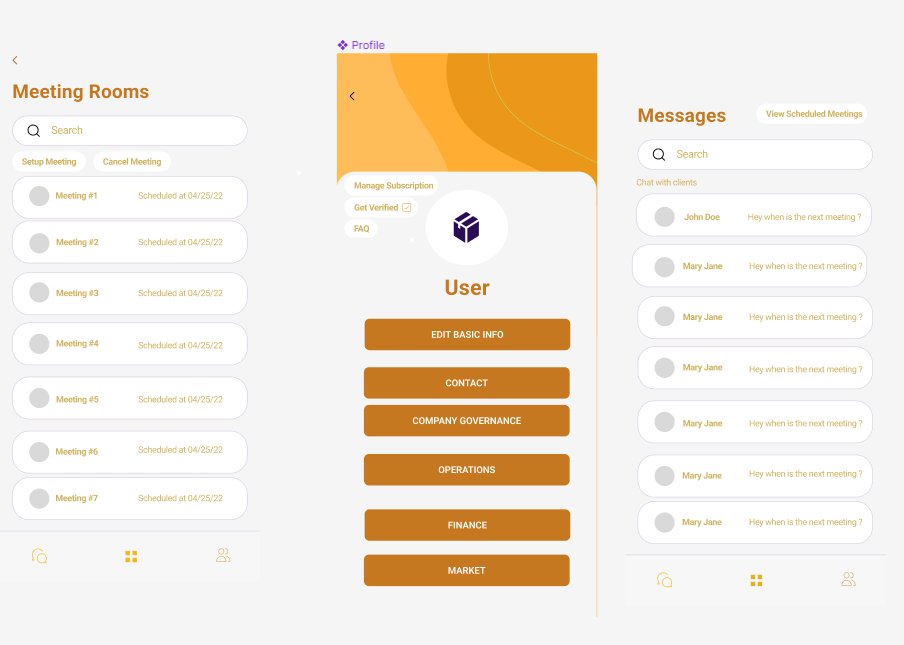
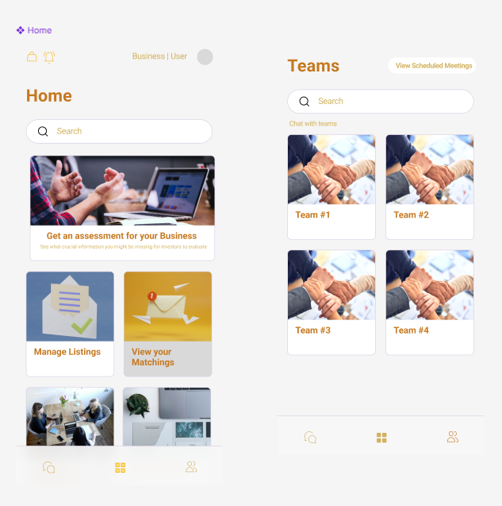
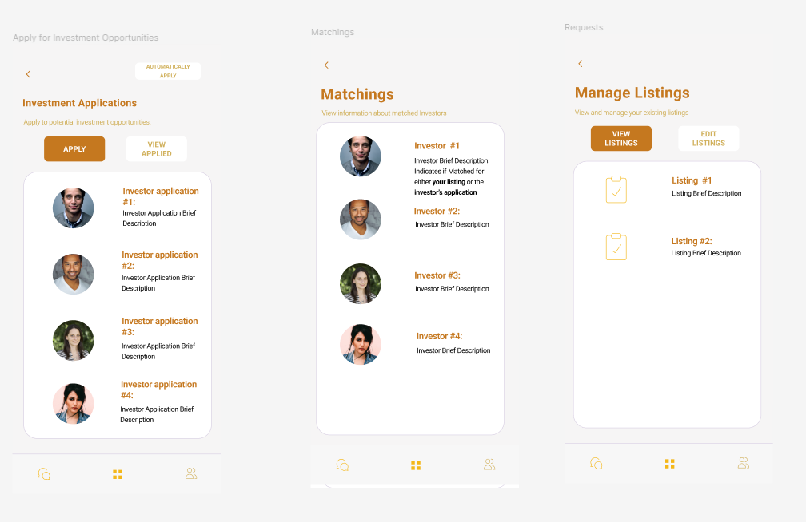

Recreating Webstie Features for Mobile App

Project Overview:
This project focuses on recreating key features from the company's website for the mobile version. The website is designed to match businesses with potential investors, and the goal is to ensure seamless synchronization and integration between the web-based platform and the mobile app.
Objectives:
- Recreate the company's website features for the mobile app.
- Ensure seamless synchronization and integration between the web platform and the mobile app.
- Conduct thorough testing of the new mobile app to ensure functionality and user experience.
Technical Outline:
- Feature Recreation:
- Business Profile Creation: Allow businesses to create and manage profiles.
- Investor Matching: Implement algorithms to match businesses with potential investors.
- Communication Tools: Integrate chat and messaging features for business-investor interactions.
- Notifications: Set up push notifications for updates and interactions.
- Synchronization and Integration:
- API Development: Develop APIs to facilitate data exchange between the web platform and the mobile app.
- Data Consistency: Implement mechanisms to ensure data consistency across both platforms.
- Real-Time Updates: Enable real-time updates and synchronization using technologies like WebSockets
- Testing:
- Unit Testing: Conduct unit tests for individual components and features.
- Integration Testing: Test the integration between different modules and platforms.
- User Acceptance Testing (UAT): Perform UAT with actual users to gather feedback and identify issues
Visual Outline:
- Communication: This shows the implementation for messaging and meetings between businesses and client investors:
- Hub: This shows the implementation for the home page and teams where businesses can navigate through different sections of the webstie:
- Listings and Matchings: This shows the implementation for the businesses to manage their listings or apply for investment applications. Also allowing for them to see if they have any potnetial matchings with an investor


